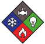

Centrale verwarming aanleggen
Ervaar het serviceverschil.
U kunt op onze serviceprofessionals rekenen.



Ervaar het serviceverschil.
U kunt op onze serviceprofessionals rekenen.
De specialisten van Curned CoolSystem hebben jarenlange ervaring met de installatie van centrale verwarming en radiatoren.
U kunt met een gerust hart uw nieuwe centrale verwarming door ons laten aanleggen.
Daarbij hoeft u zich geen zorgen te maken over uw veiligheid: alles wordt door ons nauwkeurig gecontroleerd!
Wanneer er een centraal verwarmingssysteem wordt aangelegd in uw woning, wordt er van tevoren gekeken naar een aantal factoren.
Deze factoren bepalen onder andere welke materialen en installaties er precies nodig zijn.
De volgende vragen staan daarbij centraal:
Wilt u een goed advies op maat voor het installeren van een cv-ketel en/of radiator?
Dan staan de adviseurs van Curned CoolSystem uiteraard voor u klaar om te kijken naar de beste optie voor uw woning of bedrijfspand.
Voor meer informatie of het maken van een afspraak neemt u contact met ons op door te bellen naar +31 6 14 84 21 32.
Ook kunt u ons bereiken door een e-mail te sturen naar info@curnedcoolsystem.nl.
Voor het aanvragen van een offerte kunt u het contact/ aanvraagformulier invullen.
Curned CoolSystem beschikt over ervaren specialisten voor de installatie van cv-ketels.
U kunt bij ons altijd vertrouwen op vakkundige monteurs.
Zij komen bij u thuis langs om reparaties uit te voeren of om uw nieuwe cv-ketel te installeren.
Wij zorgen ervoor dat uw warmwatervoorziening volledig aansluit op uw wensen en dat de ketelinstallatie krachtig genoeg is om aan alle eisen te voldoen.
Zodra de offerte is opgesteld en het werk is overeengekomen, voert een van onze deskundige monteurs de installatie uit met een minimum aan rompslomp en een maximum aan resultaat.
Er zijn verschillende redenen waarom een cv-ketel plotseling kan stoppen met werken.
Meestal heeft het probleem te maken met veroudering van de apparatuur, kalkaanslag of corrosie, lekkage of roestvorming.
In de loop der jaren heeft Curned CoolSystem vrijwel elk probleem met cv-ketels opgelost.
Hieronder vindt u een overzicht van de meest voorkomende storingen:
De vakkundige specialisten van Curned CoolSystem verhelpen het probleem aan uw cv-ketel snel en professioneel.
Moet uw cv-ketel worden gerepareerd of bent u op zoek naar een nieuwe cv-ketel?
Dan bent u bij ons aan het juiste adres.
Onze installatie- en servicemonteurs zijn bekwaam, ervaren en betrouwbaar.
Zij luisteren naar uw wensen en zetten hun expertise in om u volledig tevreden te stellen.
De diensten die de installatie- en reparatiemonteurs van Curned CoolSystem bieden:
Meestal hoeft een radiator niet direct te worden vervangen, maar kan deze nog prima worden gerepareerd.
In sommige gevallen is het echter voordeliger om de radiator te vervangen.
In beide situaties geven wij u graag eerlijk advies en maken wij een vrijblijvende offerte.
Curned CoolSystem voert deskundige reparaties uit zodat uw radiatoren weer jarenlang probleemloos meegaan.
Wij bieden u de beste kwaliteit, service en vakkennis.
Het komt weleens voor dat er water uit de radiatorkraan druppelt of dat er op een andere plek bij de radiator lekkage ontstaat.
Ook dan kunt u Curned CoolSystem inschakelen om het probleem vakkundig te verhelpen.
Wilt u uw huidige radiator verplaatsen naar een andere plek in huis of een nieuwe radiator laten plaatsen?
Geen probleem, Curned CoolSystem staat klaar om u te helpen.
Bovendien ontvangt u garantie op de door ons uitgevoerde werkzaamheden.
Zo bent u verzekerd van duurzame kwaliteit die voldoet aan de strengste eisen binnen onze branche.
Wilt u weten wat wij voor u kunnen betekenen?
Voor snel en vrijblijvend advies belt u ons gerust op +31 6 14 84 21 32 om de mogelijkheden voor het repareren of vervangen van uw radiator(en) te bespreken.
Met het contact formulier vraagt u bovendien gemakkelijk en snel een offerte aan.
Warmtepompen bieden een duurzaam en kostenefficiënt alternatief voor het verwarmen en koelen van uw woning.
In vergelijking met traditionele systemen kan een warmtepomp 30% tot 70% besparen op uw verwarmingskosten en 20% tot 50% op de koelkosten.
Als klant van Curned CoolSystem komt u mogelijk in aanmerking voor subsidie of een aantrekkelijke korting bij de aanschaf en installatie van een warmtepomp.
Een hybride warmtepomp combineert twee warmtebronnen om uw woning in elke situatie optimaal te verwarmen.
De buitenunit (lucht-waterwarmtepomp) onttrekt warmte aan de buitenlucht en zet deze om voor uw centrale verwarming.
Warmtepompen werken uitstekend bij milde en koele buitentemperaturen.
De koppeling met een hoogrendement cv-ketel zorgt ervoor dat uw verwarmingssysteem direct extra vermogen krijgt op de koudste winterdagen.
Voor het juiste huishouden levert dit een merkbaar verschil op in comfort én energieverbruik.
Een hybride systeem is niet voor elke woning de enige oplossing; sommige woningen zijn beter gebaat bij een moderne hr-ketel of een volledig elektrische oplossing.
Toch levert hybride verwarmen in veel huishoudens een forse besparing op de maandelijkse energierekening op, omdat een groot deel van de warmte gratis uit de buitenlucht wordt gehaald.
Daarnaast biedt het systeem maximale flexibiliteit en bedrijfszekerheid: in het voor- en najaar draait de warmtepomp vrijwel zelfstandig, terwijl in hartje winter de cv-ketel bijspringt wanneer dat nodig is.
Hybride verwarmingssystemen vragen om specialistische kennis en ervaring.
Daarom staat Curned CoolSystem voor u klaar.
Wij bieden complete service voor hybride warmtepompen: van deskundig advies en installatie tot vervanging, reparatie en periodiek onderhoud.
Zo hoeft u zich geen zorgen te maken over storingen en bent u verzekerd van een systeem dat altijd optimaal en zuinig presteert.
U kunt op onze serviceprofessionals rekenen.